Затухання Світла -- Light Attenuation¶
Панель «Лампа» -- Lamp, підсвічені опції спаду -- Falloff.
Існують два головні контролери для спаду світла від ламп «Точка» -- Point та «Прожектор» -- Spot:
- Вибірник типу спаду Falloff світла від лампи.
- Та стяг «Сфера» -- Sphere.
Типи Спаду -- Falloff Types¶
Лін/Квад Виважено -- Lin/Quad Weighted¶
Панель Lamp з підсвіченими опціями типу спаду Lin/Quad Weighted.
При обранні цього типу спаду стають показуватися два повзунки «Лінеарно» -- Linear та «Квадратично» -- Quadratic, які керують відповідно «прямолінійністю» та «квадратичністю» кривої спаду.
Цей тип спаду для лампи фактично дозволяє змішувати два профілі затухання світла (лінеарний та квадратичний типи затухання).
Лінеарно -- Linear¶
Увідне поле цього повзунка може мати значення між (0.0 до 1.0). Значення 1.0 для устави «Лінеарно» -- Linear та 0.0 для устави «Квадратично» -- Quadratic фактично означає, що світло від цього джерела затухає повністю лінеарно, прямолінійно. Це означає, що на відстані з певною кількістю Одиниць Blender, що визначена уставою Distance, інтенсивність цього джерела світла буде половинною від значення, яке було спочатку.
Коли повзунок Quadratic задано як 0.0, то формула для розробки затухання у певному діапазоні для повного лінеарного затухання буде:
\(I = E × (D / (D + L × r))\)
Де:
- I -- обчислена Інтенсивність світла.
- E -- поточне значення устави «Енергія» -- Energy.
- D -- поточне значення устави «Відстань» -- Distance.
- L -- поточне значення устави «Лінеарно» -- Linear.
- r -- відстань від лампи, на якій вимірюється інтенсивність світла.
Квадратично -- Quadratic¶
{kind=link}
Світло від лампи зі стандартними уставами спаду типу Lin/Quad Weighted.
Увідне поле цього повзунка може мати значення між (0.0 до 1.0). Значення 1.0 устави «Квадратично» -- Quadratic та 0.0 устави «Лінеарно» -- Linear означає, що світло від цього джерела затухає повністю квадратично.
Тип квадратичного затухання вважається більш точним представленням того, як затухає світло (у реальному світі). Фактично, повністю квадратичне затухання вибране у Blender'і стандартно. Приклад спаду типу Lin/Quad Weighted зі стандартними уставами дивіться на Ілюстрації Світло від лампи зі стандартними уставами спаду типу Lin/Quad Weighted..
Тут знову, інтенсивність світла стає половинною, коли воно досягає значення Distance від лампи. При порівнянні квадратичного з лінеарним спадом, для першого інтенсивність згасає більш повільно на відстанях, нижчих, ніж задано уставою Distance, та затухає більш швидко, після досягнення і проходження значення Distance.
Коли повзунок Linear задано як 0.0, то формула для розробки затухання у певному діапазоні для повного квадратичного затухання буде:
\(I = E × (D^2 / (D^2 + Q × r^2))\)
Де:
- I -- обчислена Інтенсивність світла.
- E -- поточне значення устави «Енергія» -- Energy.
- D -- поточне значення устави «Відстань» -- Distance.
- Q -- поточне значення устави Quadratic.
- r -- відстань від лампи, на якій вимірюється інтенсивність світла.
Змішування "Linear" та "Quad"¶
Якщо обидві устави Linear та Quad мають значення більші за 0.0., то формула, використовувана для обчислення профілю затухання світла змінюється на таку:
\(I = E × (D / (D + L × r)) × (D^2 / (D^2 + Q × r^2))\)
Де:
- I -- обчислена Інтенсивність світла.
- E -- поточне значення устави «Енергія» -- Energy.
- D -- поточне значення устави «Відстань» -- Distance.
- L -- поточне значення устави «Лінеарно» -- Linear.
- Q -- поточне значення устави Quadratic.
- r -- відстань від лампи, на якій вимірюється інтенсивність світла.
Обнулення обох "Linear" та "Quad"¶
Якщо обидві устави Linear та Quadratic мають значення 0.0, то інтенсивність світла не буде затухати з відстанню. Це не означає, що світло не стає темнішим, а скоріш те, що воно ставатиме, але тільки через те, що енергія світла розподіляється все на ширшій та ширшій відстані. Однак, загальний ж обсяг енергії у розподіленому світлі залишається тим же. Кут світла також впливає на кількість світла, яке ви бачите. Це фактично поведінка світла у глибокому вакуумі космосу.
Якщо все, що ви хочете, це щоб світло від джерела не затухало та давало таку ж кількість інтенсивності освітлення для кожної ділянки, на яку воно потрапляє, вам необхідно для освітлювача задати тип спаду Falloff як «Постійно» -- Constant.
Також, коли для обох повзунків Linear та Quad задано значення 0.0, то устава Distance втрачає будь-який вплив на затухання світла, як показано рівнянням вище.
Графічний підсумок¶
Нижче дається графічний підсумок типу затухання Lin/Quad Weighted, який показує затухання із та без активованої опції Sphere (описується нижче).
Затухання Світла -- Light Attenuation:
- Лінеарно -- Linear (Linear = 1.0, Quad = 0.0);
- Квадратично -- Quadratic (Linear = 0.0, Quad = 1.0);
- Лінеарно і квадратично -- Linear and quadratic (Linear = Quad = 0.5);
- Нульове -- Null (Linear = Quad = 0.0);
Також на графі показуються «такими ж» кривими тими ж кольорами, але з активованою кнопкою Sphere.
Власна Крива -- Custom Curve¶
Тип спаду Falloff -- «Власна Крива» -- Custom Curve є дуже гнучким.
Більшість інших типів спаду працюють, маючи на початку їх інтенсивність світла на максимумі (коли воно біля джерела світла) і потім за деяким наперед визначеним взірцем вона зменшується при збільшенні відстані від джерела.
При увімкненні типу спаду для лампи Custom Curve у вкладці для неї з'являється нова панель -- «Крива Спаду» -- Falloff Curve. Цей граф профілю на панелі Falloff Curve дозволяє користувачу змінювати спад інтенсивності світла у певній точці за допомогою профілю затухання (тобто, на визначеній відстані від джерела світла).
The Falloff Curve profile graph has two axes, the Distance axis and the Intensity axis.
- Вісь Відстані
- Вона представляє позицію у певній точці уздовж шляху затухання світла від джерела. Крайня ліва сторона -- це позиція джерела світла, а крайня права -- місце, де вплив джерела світа зазвичай повністю затухає.
- Вісь Інтенсивності
- Вона представляє інтенсивність у певній точці уздовж шляху затухання світла від джерела. Вища інтенсивність представлена вищими, верхніми значеннями по цій осі, тоді як низька інтенсивність -- нижчими, внизу значеннями по даній осі.
Змінювання графу профілю Falloff Curve є легким. Просто клацайте LMB на потрібній частині графу та тягніть його там у потрібному напрямку. Якщо ви клацнете над або поблизу крихітного чорного квадратного держака, то він забарвиться у білий, що вказує на те, що цей держак поточно виділений і ви можете перетягнути його у нову позицію. Якщо ви клацнете на графі не поблизу держака, то у точці вашого клацку створиться новий держак, який ви далі зможете перетягувати. Ви можете також створювати держаки у потрібній частині графу, для цього утримуючи натисненою Ctrl клацніть LMB на ній -- і там створиться новий держак у точці вашого клацку мишею.
На прикладі нижче (стандартний вигляд профілю Falloff Curve) граф показує, що інтенсивність світла у лівій частині починається на максимумі (біля джерела світла) та лінеарно, прямолінійно затухає при переході в його праву частину (далі від джерела світла).
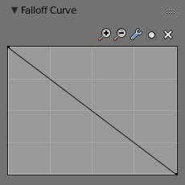
Панель зі стандартним графом Кривої Спаду -- Falloff Curve. |
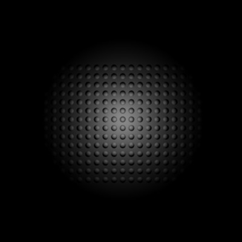
Зображ, що демонструє ефект освітлення при стандартних уставах типу спаду Власної Кривої. |
{kind=link}
{kind=link}
Якщо ви хочете мати профіль затухання світла, що стає більш інтенсивним при віддаленні його від джерела, то ви можете змінити граф, як показано нижче:
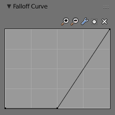
Крива Спаду для розвернутого затухання. |
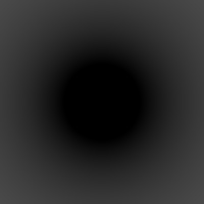
Зображ ефекту від Кривої Спаду для розвернутого затухання. |
{kind=link}
{kind=link}
Ви звичайно не обмежені простими змінами, як розвертання профілю затухання, ви можете задати майже будь-яку бажану форму для профілю.
Ось інший приклад іншого графу профілю Falloff Curve разом із зображем ефекту від цього:
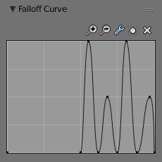
Коливальний профіль затухання. |
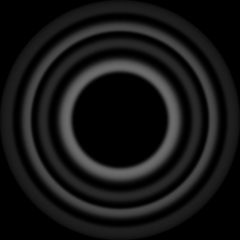
Зображ, що показує ефекти «хвильового» графу профілю затухання світла. |
{kind=link}
{kind=link}
Обернено Квадрату -- Inverse Square¶
{kind=link}
Зображ, який показує ефект типу спаду Inverse Square зі стандартними уставами.
Цей тип спаду для лампи дає затухання інтенсивності світла від неї згідно із законом обернено квадрату, масштабованого значенням Distance. Тип «Обернено Квадрату» -- це різке, реалістичне згасання світла, корисне для освітлення, як від настільних ламп або вуличних ліхтарів. Цей тип подібний до старої опції Quad (і, як наслідок, до нової опції Lin/Quad Weighted зі значеннями Linear як 0.0 та Quadratic як 1.0), з деякими змінами.
Обернено Лінеарно -- Inverse Linear¶
{kind=link}
Зображ, який показує ефект типу спаду Inverse Linear зі стандартними уставами.
Цей тип спаду для лампи дає прямолінійне затухання інтенсивності світла від неї, масштабоване значенням Distance. Це стандартна устава, що дає таку ж поведінку, як і стандарт у попередніх версіях Blender'а без увімкнення опції Quad, і, як наслідок, подібно до нової опції Lin/Quad Weighted зі значеннями Linear як 1.0 та Quadratic як 0.0. Цей тип не є фізично точним, але легший для установлення освітлення на базі нього.
Постійно -- Constant¶
{kind=link}
Зображ, який показує ефект типу спаду Constant зі стандартними уставами.
Цей тип спаду світла від лампи передбачає відсутність затухання його інтенсивності з відстанню. Він корисний для віддалених джерел світла, як сонце або небо, які знаходяться настільки далеко, що спад світла від них не помітний. Лампи типу «Сонце» -- Sun та «Півсфера» -- Hemi завжди мають такий тип постійного спаду.
Обернено Коефіцієнтам -- Inverse Coefficients¶
Цей тип спаду світла від лампи є комбінацією режимів «Обернено Квадрату» -- Inverse Square, «Обернено Лінеарно» -- Inverse Linear та «Постійно» -- Constant в єдиній обернено-квадратичній формулі:
\(I = E × (1.0 / (Q × r^2 + L × r + C))\)
Де:
- I -- обчислена Інтенсивність світла.
- E -- поточне значення устави «Енергія» -- Energy.
- C -- поточне значення для устави Constant.
- L -- поточне значення для устави Linear.
- Q -- поточне значення для устави Quadratic.
- r -- відстань від лампи, на якій вимірюється інтенсивність світла.
Така модель спаду зазвичай використовується у застосунках зображування, рендерингу у реальному часі через мову відтінення як GLSL.
Сфера -- Sphere¶
{kind=link}
Екранознімок редактора 3D Огляду -- 3D View, який показує кільце відсікання світла опції «Сфера» -- Sphere.
Опція Sphere дає обмеження діапазону випромінення світла для лампи типу «Точка» -- Point або «Прожектор» -- Spot, так що освітлення від неї повністю зупиняється, коли воно досягає відстані в Одиницях Blender від цієї Лампи, зазначеної уставою Distance.
При опція Sphere активна, то у 3D Огляді з'являється позначена пунктиром сфера навколо джерела освітлення, яка вказує на точку розмежування, в якій та після якої інтенсивність світла буде нульовою.
Опція Sphere додає зміну в обране правило затухання:
\(I' = I × (D - r) / D\) якщо \(r < D\);
\(I' = 0\) інакше;
Де:
- I' -- необхідна Інтенсивність -- Intensity світла (з активованою опцією Sphere).
- I -- інтенсивність світла, обчислена відповідно обраного правила затухання (без активованої опції Sphere).
- D -- поточне значення устави «Відстань» -- Distance.
- r -- відстань від лампи, на якій вимірюється інтенсивність світла.
Дивіться графік у кінці опису опції затухання Lin/Quad Weighted.
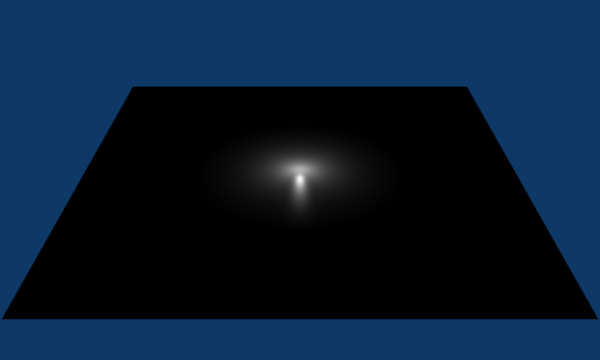
Зображ, який показує тип затухання світла Constant з активованою опцією Sphere. |
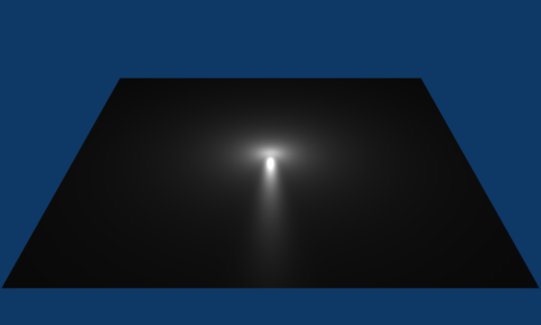
Зображ, що показує тип затухання світла Constant з неактивною опцією Sphere. |
{kind=link}
{kind=link}
Приклади¶
Приклад ефектів на основі устави «Відстань» -- Distance¶
У цьому прикладі, лампа типу Point була установлена досить близько до групи площин. Це спричинило, що світло впливає на передні, середні та задні площини більш драматично. При збільшенні значення Distance ви можете побачити, що більше і більше об'єктів стають прогресивно яскравішими.
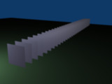
Distance: 10. |
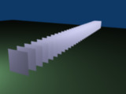
Distance: 100. |

Distance: 1000. |
Цей параметр Distance керує тим, де світло спадає -- стандартно з лінеарною швидкістю -- на половину його оригінального значення від початку освітлювача. При збільшенні або зменшенні цього значення змінюється місце, де цей половинний спад відбувається. Ви можете уявити Distance як поверхню сфери та у місці цієї поверхні інтенсивність світла падає до своєї половинної сили в усіх напрямках. Зауважте, що інтенсивність світла продовжує падати й далі після місця, визначеного уставою Distance. Distance просто визначає відстань, де енергія світла ослаблюється на половину.
Зверніть увагу на Ілюстрації Distance: 1000., що найдальші об'єкти є дуже яскравими. Це через те, що спад було розширено далеко з відстанню, а це означає, що світло є дуже сильним при потраплянні на останні кілька об'єктів. На відстані 1000 одиниць інтенсивність світла ще не спала на половину свого оригінального значення.
Порівняйте це з Ілюстрацією Distance: 100., де спад стається так скоро, що дальші об'єкти лише ледь освітлені. Інтенсивність світла спала на половину з часом, коли воно досягло десятого об'єкта.
Ви можете бути здивовані, чому перші кілька площин виглядають тьмяними? Це через те, що кут поверхні між напрямком світла та нормаллю поверхні об'єкта є близьким до дуже гострого. Така природа освітлювача типу «Точка» -- Point. Перемістивши освітлювач безкінечно далеко ви почнете досягати характеристик лампи типу «Сонце» -- Sun.
Приклад ефектів на основі типу спаду «Обернено Квадрату» -- Inverse Square¶
Тип Inverse Square дає спад інтенсивності світла з не-лінеарною швидкістю, або, конкретніше, зі швидкістю, що змінюється за квадратичним правилом. Характерною рисою використання Inverse Square є те, що інтенсивність світла починає спадає дуже повільно, але потім на певній відстані розпочинає спадати дуже швидко. Ми можемо побачити це на Ілюстрації Тип спаду обрано як Inverse Square. (з вказаними відстанями)..
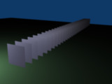
Inverse Square зі значенням відстані 10. |
Inverse Square зі значенням відстані 100. |
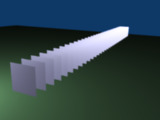
Inverse Square зі значенням відстані 1000. |
При обраному типі спаду Inverse Square устава Distance визначає місце, де світло починає спадати швидше -- дивіться детальніше тут -- Falloff types.
На Ілюстрації Inverse Square зі значенням відстані 10. інтенсивність світла спала так швидко, що останні кілька об'єктів зовсім не освітлені.
Обидві Ілюстрація Inverse Square зі значенням відстані 100. та Ілюстрація Inverse Square зі значенням відстані 1000. виглядають майже ідентично і це через те, що значення Distance задане поза значенням відстані найдальшого об'єкта, приблизно більше ніж на 40 Одиниць Blender. Звідси, майже ці усі об'єкти освітлені з повною інтенсивністю.
Як і у прикладах вище, перші кілька об'єктів є тьмяними на вигляд, ніж дальші об'єкти, оскільки вони знаходяться дуже близько до освітлювача. Пам'ятайте, яскравість об'єкта поверхні також базується на куті між нормаллю цієї поверхні об'єкта та кутом променя світла, що йде від лампи.
Це означає, що є принаймні дві речі, які керують яскравістю поверхні: інтенсивність та кут між променем світла та нормаллю цієї поверхні.
Приклад ефектів на основі опції «Sphere» -- Сфера¶
Відсічна сфера.
Опція Sphere вказує, що інтенсивність світла є нульовою на заданій уставою Distance відстані та поза нею, незалежно від обраного спаду світла. На Ілюстрації Відсічна сфера. ви можете бачити приклад огляду збоку укладу з увімкненою опцією Sphere та значенням Відстані як 10.
Будь-які об'єкти поза сферою не отримуватимуть жодного освітлення від даної лампи.
Устава Distance тепер вказує на обидва місця, де сила променів світла стає нульовою та де змінюється пропорція спаду інтенсивності. Зауважте, що у місці сфери немає жодного різкого переходу: затухання світла є прогресивним (детальніше дивіться тут -- Sphere та Falloff types).
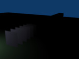
Sphere зі значенням відстані 10. |
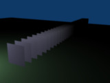
Sphere зі значенням відстані 20. |
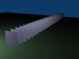
Sphere зі значенням відстані 40. |
На Ілюстрації Sphere зі значенням відстані 10. радіус відсічної сфери -- 10 одиниць, що означає, що інтенсивність світла також скеровується на відстані 10 одиниць від джерела світла. З лінеарним затуханням інтенсивність світла спала дуже низько ще до того, як воно досягло першого об'єкта.
На Ілюстрації Sphere зі значенням відстані 20. радіус відсічної сфери -- 20 Одиниць Blender і певна частина світла досягає об'єктів посередині.
На Ілюстрації Sphere зі значенням відстані 40. радіус відсічної сфери -- 40 одиниць, що є поза останнім об'єктом. Однак, світло не доходить до останніх кількох об'єктів, оскільки його інтенсивність впала майже до 0.
Gợi ý
Якщо для лампи типу Point не увімкнено відкидання тіней, то вона світить крізь об'єкти -- стіни тощо. Якщо ви хочете досягти деяких гарних ефектів, як вогонь або освітлений свічкою інтер'єр кімнати, видимий зовні через вікно, то повинна використовуватися опція Sphere. Обережно працюючи зі значенням Distance, ви можете домогтися теплого освітлення її вогнем тільки кімнати, а освітлення поза нею буде створюватися холодним місячним світлом за допомогою освітлювача типу Sun або Hemi, чи зразу їх обох.